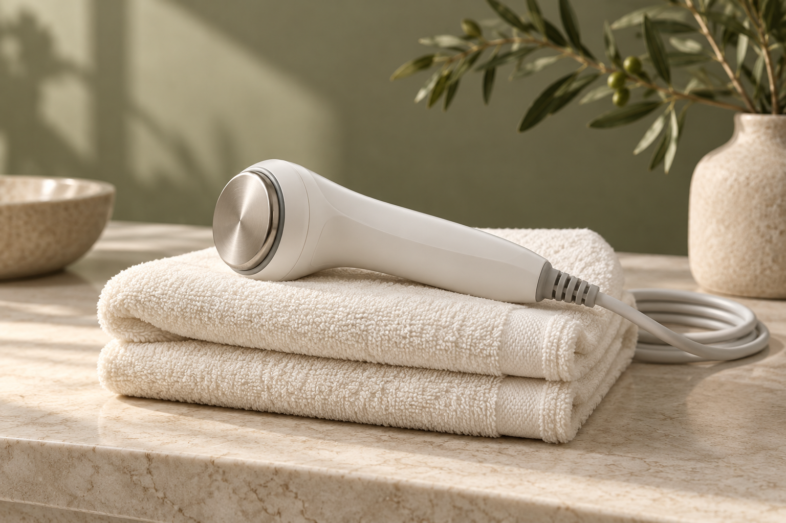
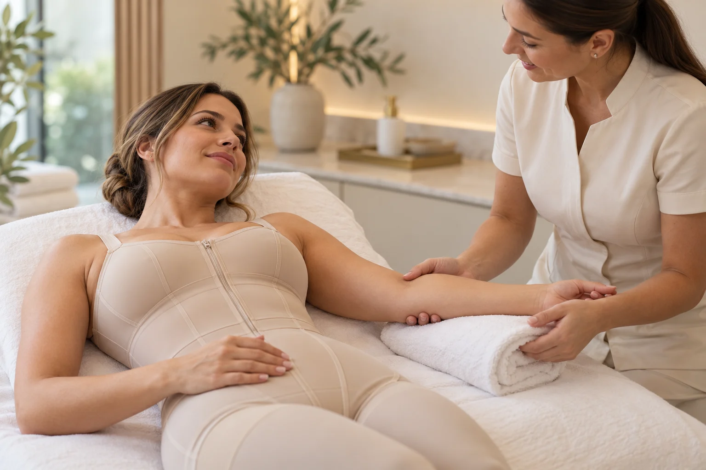

01 Rosto
Sua pele, sua essência
Estética facial
Conheça as possibilidades de cuidado para a pele e os traços do seu rosto.
Pele e rostoSeu cuidado começa com você
Estética facial e corporal, cuidados com o corpo e bem-estar. Conheça as possibilidades e converse sobre o que faz sentido para você.
5,043 avaliações no Google ↗Encontre seu cuidado
Explore as áreas e reúna seus interesses em uma única conversa.
Precisa de orientação?5 áreas disponíveis.
Sua pele, sua essência
Conheça as possibilidades de cuidado para a pele e os traços do seu rosto.
Pele e rosto
02 CorpoCuidado em cada detalhe
Converse sobre os cuidados com a pele e o corpo a partir de uma avaliação individual.
Pele e corpo
03 Pós-operatórioSeu tempo de recuperação
Acompanhamento individualizado para sua recuperação, respeitando cada etapa e as orientações da equipe médica.
Recuperação e acolhimentoAtenção à sua postura
Cuidados voltados à postura, à mobilidade e ao conforto da coluna, a partir de uma avaliação individual.
Postura e mobilidadeCuidado para seus movimentos
Atenção aos músculos e às articulações, com foco na recuperação dos movimentos e nas atividades do dia a dia.
Fisioterapia ortopédicaEscolha um ou mais interesses. A indicação de cuidados depende de avaliação individual.
Imagens ilustrativas. Os cuidados, equipamentos e profissionais disponíveis devem ser confirmados com a clínica.
Um cuidado que começa pela escuta
Cada pessoa chega com uma necessidade. Encontre o que faz sentido para o seu momento e conheça um próximo passo.
Selecione uma opção para saber mais.
Ainda não sabe por onde começar?
Pós-operatório de cirurgia plástica
Converse sobre o acompanhamento na sua recuperação, considerando a etapa do pós-operatório e as orientações da equipe médica.
Coluna e postura
Conte quais desconfortos você percebe e como eles afetam sua rotina. A avaliação individual é o ponto de partida para conhecer as possibilidades de cuidado.
Estética facial
Compartilhe o que você busca para a pele e o rosto. Conheça os cuidados disponíveis e esclareça suas dúvidas antes de escolher um procedimento.
Dermatofuncional
Converse sobre a pele e os cuidados corporais, com atenção aos seus objetivos e às possibilidades indicadas após avaliação.
Fisioterapia ortopédica
Fale sobre as dificuldades de movimento que você percebe no dia a dia e conheça as possibilidades de avaliação e acompanhamento.
A indicação de cuidados depende de avaliação individual. Rever todas as áreas
A essência Daniele Lucena
Um olhar atento.
Um cuidado
próximo.
Antes de qualquer escolha
Antes de escolher um procedimento, vale entender seus objetivos. A proposta é abrir espaço para suas dúvidas e construir o próximo passo com orientação.
Conheça as áreas de cuidado, compartilhe o que você busca e esclareça suas dúvidas antes de decidir.
Entenda o primeiro contato ↗Sem complicar
Da primeira dúvida à avaliação, o começo pode ser simples.
Escolha uma área ou peça uma primeira orientação.
Confirme os cuidados disponíveis, valores e horários.
A indicação e o plano de cuidado dependem de avaliação individual.
Conheça de perto
Do espaço aos detalhes: um pouco da clínica, da rotina e de quem cuida de você.
03 registros para explorarToque nas imagens para ampliar. Navegue pelas setas ou deslize no celular.
Confiança que vem de quem conhece
Conheça algumas experiências compartilhadas por quem passou pela clínica.
8 depoimentos selecionados
Trechos e relatos selecionados de avaliações do Google.
Sua opinião ajuda outras pessoas a conhecerem nosso atendimento.
Antes do primeiro contato
Algumas respostas para começar com mais tranquilidade.
Não. Você pode começar contando o que busca e esclarecer as possibilidades durante uma avaliação.
Converse com a clínica para confirmar valores, profissionais e horários disponíveis para o cuidado desejado.
Sim. Você pode editar a mensagem de contato e incluir os interesses sobre os quais gostaria de conversar.
As necessidades e a indicação de procedimentos dependem de avaliação individual. Planos e resultados podem variar.
Perto de você
Estamos no City América, em São Paulo. Encontre a melhor rota e converse com a clínica para combinar sua visita.
Confirme a disponibilidade e os horários em feriados.
Abra o mapa para localizar a entrada e planejar sua visita.
Abrir mapa em outra aba ↗